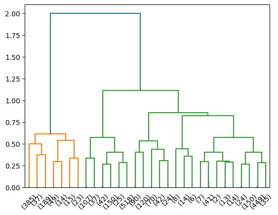
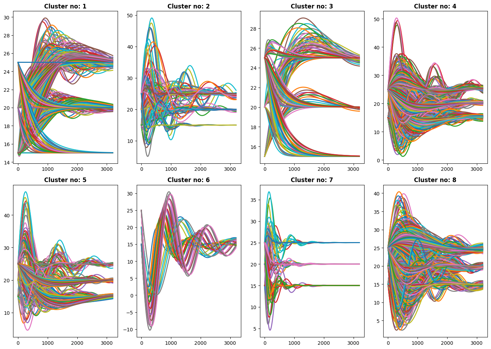

PySD usage
This notebook shows how to run a simple Vensim model with PySD and feed results to simgon.clusterer.
MDL dosyasının bulunduğu yerde, path’de pycache ve py dosyaları oluşuyor, onları main kodda fonksiyonun altında silmek lazım.
import sys’den model_path’e olan 4 satır package yayımlanmadan silinerek commented linelar kullanılmalıdır.
[ ]:
#from simgon.clusterer import perform_clustering, simulate_from_vensim
#model_path = 'path/to/your/model.mdl'
import sys
sys.path.insert(0, "/Users/emirsener/Desktop/ts-clustering")
from simgon.clusterer import perform_clustering, simulate_from_vensim
import os
model_path = os.path.expanduser('~/Desktop/temperature model/temperature model.mdl')
parameter_set = {'Initial actual temperature': [15, 20, 25],
'Initial measured temperature': [15, 20, 25],
'Desired temperature': [15, 20, 25],
'Adjustment time': [2*i for i in range(1, 11)],
'Measurement delay': [2*i for i in range(1, 11)]
}
output_of_interest = 'Actual Temperature'
simulation_results = simulate_from_vensim(model_path, parameter_set, output_of_interest)
for i, res in enumerate(simulation_results[:5]):
print(f"Simulation Run {i+1}:")
print(res)
print("-" * 40)
Simulation Run 1:
('Initial actual temperature=15, Initial measured temperature=15, Desired temperature=15, Adjustment time=1, Measurement delay=1', array([15., 15., 15., ..., 15., 15., 15.], shape=(3201,)))
----------------------------------------
Simulation Run 2:
('Initial actual temperature=15, Initial measured temperature=15, Desired temperature=15, Adjustment time=1, Measurement delay=2', array([15., 15., 15., ..., 15., 15., 15.], shape=(3201,)))
----------------------------------------
Simulation Run 3:
('Initial actual temperature=15, Initial measured temperature=15, Desired temperature=15, Adjustment time=1, Measurement delay=3', array([15., 15., 15., ..., 15., 15., 15.], shape=(3201,)))
----------------------------------------
Simulation Run 4:
('Initial actual temperature=15, Initial measured temperature=15, Desired temperature=15, Adjustment time=1, Measurement delay=4', array([15., 15., 15., ..., 15., 15., 15.], shape=(3201,)))
----------------------------------------
Simulation Run 5:
('Initial actual temperature=15, Initial measured temperature=15, Desired temperature=15, Adjustment time=1, Measurement delay=5', array([15., 15., 15., ..., 15., 15., 15.], shape=(3201,)))
----------------------------------------
[8]:
clustering_results = perform_clustering(simulation_results, cValue = 10000000000000, plotDendrogram=True, plotClusters=True)

